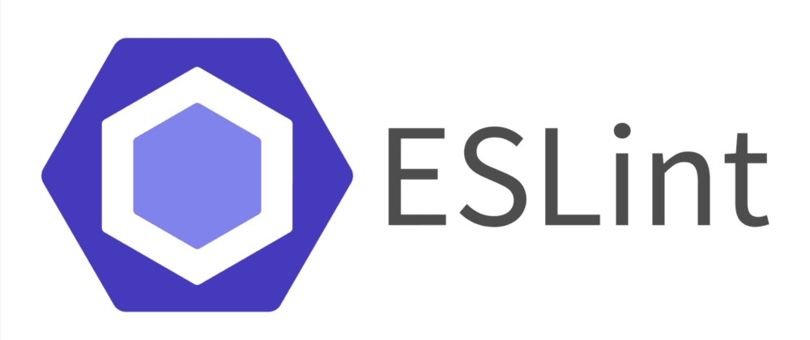

Coding Standards: Not Just Pretty Code
21 Sep 2023

Not Just Pretty Code
In the vast realm of software engineering, there's a myriad of techniques and tools to ensure the quality of code, ranging from unit testing to
rigorous design principles. Amidst these various strategies, coding standards often find themselves pigeonholed into a small corner, often perceived
as just guidelines for code presentation. In my opinion, such a narrow perspective misses the profound impact that coding standards can exert on the
coding ecosystem, from fostering consistency and readability to facilitating language learning.
One might ask: How can a set of conventions about spaces, brackets, and variable naming help someone learn a programming language? At first glance,
this correlation might seem unclear. However, when we dive deeper, the connection becomes more evident. For beginners, adhering to coding standards
provides a structured pathway to familiarize themselves with the language's syntax and semantics. It serves as a consistent framework that reduces
the cognitive overhead associated with trying to understand the intricacies of a new language. For example, knowing that functions are always named
in a certain way or that certain syntactic constructs follow a defined pattern allows a novice to more quickly recognize and understand these
constructs in various codebases. Thus, coding standards act as an implicit tutor, guiding newcomers through the maze of a new language.
My Experience With EsLint
Recently, I ventured into the world of ESLint with IntelliJ. My impressions? It's very helpful. The tool, at its core, embodies the spirit of coding
standards, reinforcing best practices and providing real-time feedback on deviations. But the journey isn't always smooth. Achieving that coveted
green checkmark can occasionally feel like wrestling with a stubborn foe. Certain rules might appear pedantic or unnecessary. The constant nudges
about a missing semicolon, an extra space, or improper formatting can occasionally feel grating. That being said, over time, I realized that the
purpose of these reminders was not to nitpick but to instill discipline. It's akin to a seasoned mentor constantly pushing you towards perfection,
not to annoy but to elevate. The green checkmark, thus, becomes more than just a symbol of error-free code; it represents a commitment to excellence
and consistency.
Unity and Collaboration
The value proposition of coding standards extends beyond just the individual developer or the learner. In a collaborative environment, these
standards act as the glue binding the team. They ensure that every piece of code, irrespective of its author, speaks the same 'language'. This
uniformity drastically reduces the onboarding time for new team members and streamlines the code review process.
In Conclusion
In conclusion, coding standards, often relegated to the backbenches of software engineering techniques, deserve a more prominent spot in the
limelight. They are not merely about pretty code; they are about efficient, readable, and maintainable code. Whether you're a novice trying to
find your footing in a new language or a seasoned developer aiming for consistency in a vast project, coding standards serve as invaluable allies,
guiding, mentoring, and sometimes even challenging you towards excellence.